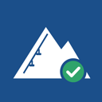
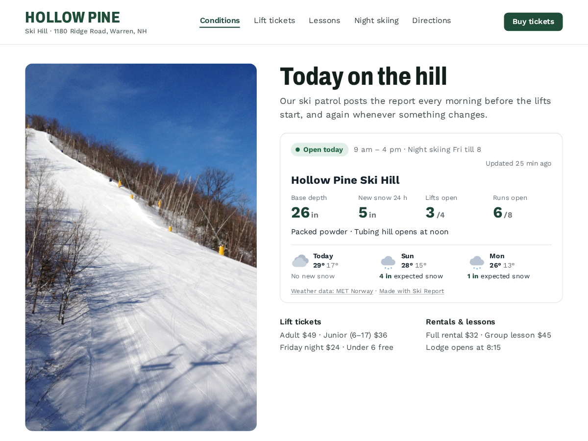

Ski Report
Snow report, lift and trail status for your site
- Open/closed, base depth, new snow, lifts open
- Post the report from your phone in a minute
- Updated time turns amber after a day
- 3-day forecast with expected snow

What it does
Ski Report puts today's snow report on your site: open or closed, base depth, new snow in the last 24 hours, lifts open and runs open, and a line like "Updated 25 min ago". If a report is more than a day old, that line turns amber, so nobody drives up on last week's numbers.
You post the report from the app's dashboard, on your phone if you like. Tap Open or Closed, type the base depth and new snow, flip each lift, run or trail to Open, On hold or Closed, and press Save report. Your site shows it right away. Nothing is measured automatically: the numbers are the ones your patrol or groomer types in.
Under the report sits a 3-day forecast for your hill, with highs, lows and expected snow, using weather data from MET Norway. Pick centimetres or inches.
It suits small family ski hills, cross-country ski clubs, ski schools and snowshoe trails.
The free plan covers one area with the status card, the forecast and a small credit link. Premium adds lift, run and trail lists with difficulty marks and grooming, a roads and parking line, a slim alert bar for your header, a TV screen layout, a snowfall history chart and several areas, and removes the credit link.
Price
Free
- One ski area
- Status card with depths and lifts open
- 3-day forecast with expected snow
- Small credit link
Premium
$6/month, $5/month yearly (17% off). Hidden pre-made plan "Premium" (vendorId premium) stays hidden
- Lift, run and trail lists with grooming
- Alert bar, TV screen and snowfall history
- Several areas
- Remove the credit link